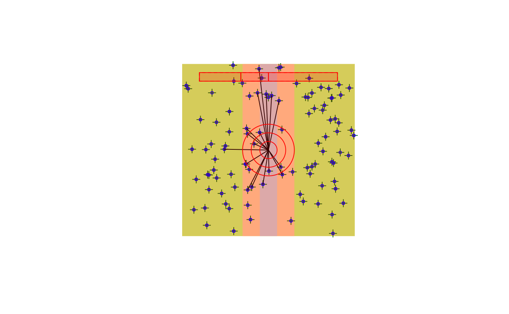
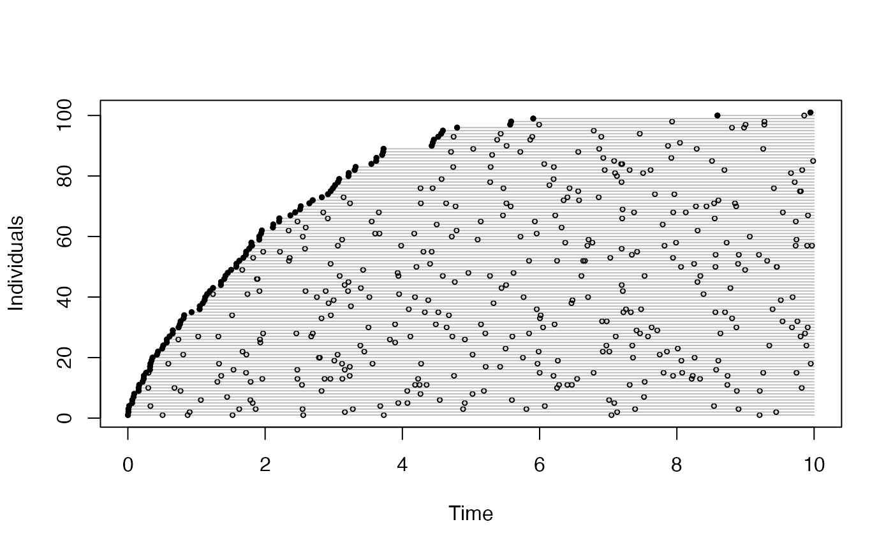
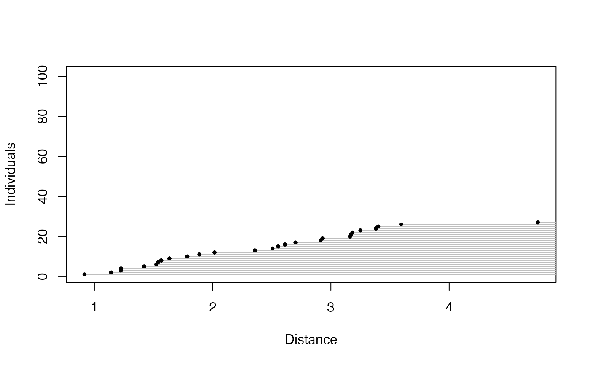
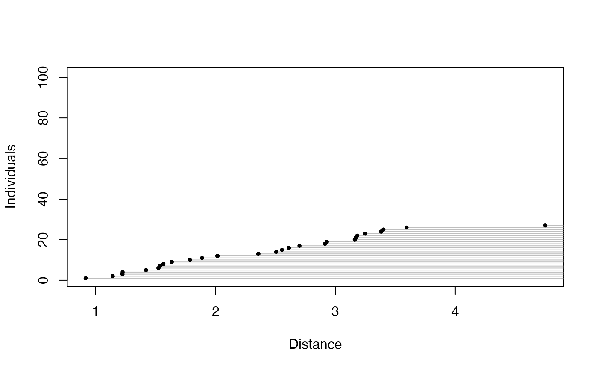

bSims simulation functions
bsims_init.RdFunctions to initialize, populate, animate, detect, and transcribe simulated birds in a point count.
Usage
bsims_init(extent = 10, road = 0, edge = 0, offset = 0)
bsims_populate(x, density = 1, abund_fun = NULL, xy_fun = NULL,
margin = 0, maxit = 100, fail = FALSE, ...)
bsims_animate(x, vocal_rate = 1, move_rate = 0, duration = 10,
movement = 0, mixture = 1, avoid = c("none", "R", "ER"),
initial_location=FALSE, allow_overlap=TRUE, ...)
bsims_detect(x, xy = c(0, 0), tau = 1, dist_fun = NULL,
event_type = c("vocal", "move", "both"),
sensitivity=1, direction=FALSE, ...)
bsims_transcribe(x, tint = NULL, rint = Inf,
error = 0, bias = 1,
condition=c("event1", "det1", "alldet"),
event_type=NULL, perception=NULL, ...)
bsims_all(...)
# S3 method for bsims_landscape
print(x, ...)
# S3 method for bsims_population
print(x, ...)
# S3 method for bsims_events
print(x, ...)
# S3 method for bsims_detections
print(x, ...)
# S3 method for bsims_transcript
print(x, ...)
# S3 method for bsims_all
print(x, ...)Arguments
- extent
extent of simulation area, an extent x extent square with (0,0) at the center.
- road
half width of the road stratum (perpendicular to the y axis).
- edge
width of edge, same width on both sides of the road stratum.
- offset
offset to apply to road and edge strata relative to the center in the x direction.
- x
a simulation object.
- density
population density, D, recycled 3x for the 3 strata (H: habitat, E: edge, R: road).
- abund_fun
function to simulate abundance, N ~ Poisson(lambda), lambda=DA by default.
- xy_fun
function used to simulate nest locations, see
acceptreject. The function should return probability (value between 0 and 1),NULLmeans complete spatial randomness.- margin, maxit, fail
arguments passed to
acceptrejectwhen usingxy_funto simulate nest locations.- vocal_rate, move_rate
Vocal and movement rates (see
events). Both of these rates can be: a single number; a vector of lengthlength(mixture)(behavior based finite mixture groups); a vector of length 3 withmixture=1(corresponding to HER strata); or a matrix of dimension 3 xlength(mixture)(HER strata x number of behavior based groups).- duration
total time duration to consider (in minutes), passed to
events.- movement
standard deviation for a bivariate Normal kernel to simulate locations centered at the nest location, passed to
events. Can refer to the same stratum and behavior based groups asmove_rate.- mixture
behavior based finite mixture group proportions.
- avoid
range along the x axis to avoid with respect to movement locations, passed to
events.- initial_location
logical,
move_rateandvocal_rateare silently ignored ifTRUEand nest locations are provided as part of the events table. This renders all individuals equally available for detection.- allow_overlap
logical, allowing overlap between neighboring nests when movement is involved. If
FALSE, Voronoi tessellation is used to prevent overlap. IfTRUE, the unconstrained bivariate Normal kernel is used.- xy
a vector of x and y coordinates describing the position of the observer.
- tau
parameter of the distance function. Can be a single numeric value; a vector of length 2 to provide parameters for vocalization (1st value) and movement (2nd value) related events; (H: habitat, E: edge, R: road, in this order); a vector of length 3 to provide parameters for the 3 strata (H: habitat, E: edge, R: road); or a 3 x 2 matrix combining strata (rows) and vocalization/movement (columns) related parameters. Segmented sound attenuation is used when the values are different in the 3 strata (see
dist_fun2).- dist_fun
distance function (1st argument is distance, second is
tau).- event_type
type of events to access (vocal, movement, or both). Inherits value from input object when
NULL.- tint
time interval break points in minutes.
- rint
distance interval break points in units of 100 meter.
- condition
conditioning type to define availability for each individual:
"event1": the 1st event (detected or not);"det1": the 1st detection;"alldet": all detections (counting the same individual multiple times).- error
log scale standard deviation (SD) for distance estimation error, see
rlnorm2. Whendirection=TRUE, error changes based on the angle between the observer and the individual's (random) singing direction. When the bird faces the observer (0 degrees) SD is 0, when the bird is facing away (180 degrees) SD iserror. In the range between 0-180 degrees the SD is changing according to the cosine of the degree: SD*(0.5-cos(degree*pi/180)/2).- bias
nonnegative numeric, the distance estimation bias. The default value (1) means no bias, <1 indicates negative bias (perceived distance is less than true distance), >1 indicates positive bias (perceived distance is higher than true distance). This acts as a multiplier and can be combined with
error. Whendirection=TRUE, bias changes based on the angle between the observer and the individual's (random) singing direction. When the bird faces the observer (0 degrees) perceived distance equals the true distance, when the bird is facing away (180 degrees) perceived distance isbias* true distance. In the range between 0-180 degrees the bias is changing according to the cosine of the degree: 1+(bias-1)*(0.5-cos(degree*pi/180)/2).- perception
perceived number of individuals relative to the actual number of individuals. A non-negative number (<1 values lead to under counting, >1 values lead to over counting), or
NULL(observer correctly identifies all individuals).- sensitivity
non-negative numeric value indicating the sensitivity of the sensor receiving the signal. Can be of length 1 (applies to both vocal and movement events) or a named vector of length 2 (names should indicate which one is
"vocal"or"move"). Sensitivity of 1 means that the process captured bytauis unaffected. Less than 1 values indicate lower sensitivity (effectively decreasing tau), larger than 1 values indicate higher sensitivity (effectively increasing tau).- direction
logical. When
TRUE, tau for vocalizations (not for movement) changes based on the angle between the observer and the individual's (random) singing direction. When the bird faces the observer (0 degrees) tau is unaffected, when the bird is facing away (180 degrees) tau issensitivity * tau. In the range between 0-180 degrees the effect is changing according to the cosine of the degree (0.5-cos(degree*pi/180)/2).- ...
other arguments passed to underlying functions. For the
bsims_allwrapper, it means all the arguments (except forx) that the underlyingbsims_*functions have.bsims_allcan also take a single list as its argument.
Details
The functions capturing the simulation layers
are supposed to be called in sequence,
allowing to simulate multiple realities by keeping
preceding layers intact. Construction allows easy piping.
The bsims_all function is a wrapper for the bsims_*
layer functions.
The simulations follow time-removal and distance sampling models based on Matsuoka et al. (2012) <doi:10.1525/auk.2012.11190>, Solymos et al. (2013) <doi:10.1111/2041-210X.12106>, and Solymos et al. (2018) <doi:10.1650/CONDOR-18-32.1>, and sound attenuation experiments by Yip et al. (2017) <doi:10.1650/CONDOR-16-93.1>.
Value
bsims_init returns a landscape object.
bsims_populate returns a population object.
bsims_animate returns an events object.
bsims_detect returns a detections object.
bsims_transcribe returns a transcript object.
get_table returns the removal table.
bsims_all returns a closure with
$settings(), $new(recover = FALSE),
and $replicate(B, recover = FALSE, cl = NULL)
functions. The settings function returns the input arguments as a list;
the new function returns a single transcript object;
the replicate function takes an argument for the
number of replicates (B) and returns a list of transcript objects
with B elements.
The cl argument is used to parallelize the work,
can be a numeric value on Unix/Linux/OSX, or a cluster object on any OS,
see examples.
The `recover = TRUE` argument allows to run simulations with error
catching based on try.
Note that simulated objects returned by bsims_all
will contain different realizations and all the conditionally independent layers. Use a layered approach if former layers are meant to be kept identical across runs.
References
Matsuoka, S. M., Bayne, E. M., Solymos, P., Fontaine, P., Cumming, S. G., Schmiegelow, F. K. A., & Song, S. A., 2012. Using binomial distance-sampling models to estimate the effective detection radius of point-counts surveys across boreal Canada. Auk, 129: 268--282. <doi:10.1525/auk.2012.11190>
Solymos, P., Matsuoka, S. M., Bayne, E. M., Lele, S. R., Fontaine, P., Cumming, S. G., Stralberg, D., Schmiegelow, F. K. A. & Song, S. J., 2013. Calibrating indices of avian density from non-standardized survey data: making the most of a messy situation. Methods in Ecology and Evolution, 4: 1047--1058. <doi:10.1111/2041-210X.12106>
Solymos, P., Matsuoka, S. M., Cumming, S. G., Stralberg, D., Fontaine, P., Schmiegelow, F. K. A., Song, S. J., and Bayne, E. M., 2018. Evaluating time-removal models for estimating availability of boreal birds during point-count surveys: sample size requirements and model complexity. Condor, 120: 765--786. <doi:10.1650/CONDOR-18-32.1>
Yip, D. A., Bayne, E. M., Solymos, P., Campbell, J., and Proppe, J. D., 2017. Sound attenuation in forested and roadside environments: implications for avian point count surveys. Condor, 119: 73--84. <doi:10.1650/CONDOR-16-93.1>
See also
Plotting functions:
plot.bsims_landscape
Getter functions:
get_nests,
get_events,
get_detections,
get_abundance,
get_density
get_table
Shiny apps:
run_app
Examples
phi <- 0.5
tau <- 1:3
dur <- 10
rbr <- c(0.5, 1, 1.5, Inf)
tbr <- c(3, 5, 10)
(l <- bsims_init(10, 0.5, 1))
#> bSims landscape
#> 1 km x 1 km
#> stratification: HER
(p <- bsims_populate(l, 1))
#> bSims population
#> 1 km x 1 km
#> stratification: HER
#> total abundance: 97
(a <- bsims_animate(p, vocal_rate=phi, duration=dur))
#> bSims events
#> 1 km x 1 km
#> stratification: HER
#> total abundance: 97
#> duration: 10 min
(o <- bsims_detect(a, tau=tau))
#> bSims detections
#> 1 km x 1 km
#> stratification: HER
#> total abundance: 97
#> duration: 10 min
#> detected: 36 heard
(x <- bsims_transcribe(o, tint=tbr, rint=rbr))
#> bSims transcript
#> 1 km x 1 km
#> stratification: HER
#> total abundance: 97
#> duration: 10 min
#> detected: 36 heard
#> 1st event detected by breaks:
#> [0, 3, 5, 10 min]
#> [0, 50, 100, 150, Inf m]
plot(x)

get_table(x, "removal")
#> 0-3min 3-5min 5-10min
#> 0-50m 0 0 0
#> 50-100m 3 0 1
#> 100-150m 4 2 0
#> 150+m 9 2 1
get_table(x, "visits")
#> 0-3min 3-5min 5-10min
#> 0-50m 0 0 0
#> 50-100m 3 1 3
#> 100-150m 4 3 3
#> 150+m 9 8 13
head(get_events(a))
#> x y t v a i
#> 1 0.7454954 2.265667 0.07708622 1 314 55
#> 2 2.4562581 -4.196199 0.08901657 1 105 71
#> 3 0.7412286 -3.369104 0.13008655 1 49 58
#> 4 3.6991336 4.029342 0.13764072 1 212 86
#> 5 1.6147163 -2.107652 0.17081207 1 119 89
#> 6 -0.7442023 -4.232930 0.17403040 1 9 32
plot(get_events(a))

head(get_detections(o))
#> x y t v a d f i j
#> 1 0.7454954 2.2656671 0.07708622 1 314 2.3851648 NA 55 55
#> 3 0.7412286 -3.3691043 0.13008655 1 49 3.4496787 NA 58 58
#> 5 1.6147163 -2.1076520 0.17081207 1 119 2.6550905 NA 89 89
#> 7 -1.3772535 -0.2774842 0.17412243 1 46 1.4049287 NA 38 38
#> 13 -0.6096540 -0.7056702 0.29357472 1 182 0.9325495 NA 31 31
#> 17 0.7412286 -3.3691043 0.42265552 1 212 3.4496787 NA 58 58
plot(get_detections(o), "time")
 plot(get_detections(o), "distance")

## wrapper function for all the bsims_* layers
b <- bsims_all(road=1, density=0.5, tint=tbr, rint=rbr)
## alternatively: supply a list
#settings <- list(road=1, density=0.5, tint=tbr, rint=rbr)
#b <- bsims_all(settings)
b$settings()
#> $road
#> [1] 1
#>
#> $density
#> [1] 0.5
#>
#> $tint
#> [1] 3 5 10
#>
#> $rint
#> [1] 0.5 1.0 1.5 Inf
#>
b$new()
#> bSims transcript
#> 1 km x 1 km
#> stratification: HR
#> total abundance: 48
#> duration: 10 min
#> detected: 3 heard
#> 1st event detected by breaks:
#> [0, 3, 5, 10 min]
#> [0, 50, 100, 150, Inf m]
bb <- b$replicate(3)
lapply(bb, get_table)
#> [[1]]
#> 0-3min 3-5min 5-10min
#> 0-50m 1 0 0
#> 50-100m 0 0 0
#> 100-150m 0 0 0
#> 150+m 0 0 0
#>
#> [[2]]
#> 0-3min 3-5min 5-10min
#> 0-50m 1 0 0
#> 50-100m 0 0 0
#> 100-150m 0 0 0
#> 150+m 0 0 0
#>
#> [[3]]
#> 0-3min 3-5min 5-10min
#> 0-50m 0 0 0
#> 50-100m 2 0 0
#> 100-150m 0 0 0
#> 150+m 0 0 0
#>
# \donttest{
## parallel simulations
library(parallel)
b <- bsims_all(density=0.5)
B <- 4 # number of runs
nc <- 2 # number of cores
## sequential
system.time(bb <- b$replicate(B, cl=NULL))
#> user system elapsed
#> 1.028 0.003 1.040
## parallel clusters
cl <- makeCluster(nc)
## note: loading the package is optional
system.time(clusterEvalQ(cl, library(bSims)))
#> Error in checkForRemoteErrors(lapply(cl, recvResult)): 2 nodes produced errors; first error: there is no package called ‘bSims’
#> Timing stopped at: 0 0 0.002
system.time(bb <- b$replicate(B, cl=cl))
#> Error in checkForRemoteErrors(lapply(cl, recvResult)): 2 nodes produced errors; first error: there is no package called ‘bSims’
#> Timing stopped at: 0 0 0.002
stopCluster(cl)
## parallel forking
if (.Platform$OS.type != "windows") {
system.time(bb <- b$replicate(B, cl=nc))
}
#> user system elapsed
#> 0.009 0.014 0.955
# }
plot(get_detections(o), "distance")

## wrapper function for all the bsims_* layers
b <- bsims_all(road=1, density=0.5, tint=tbr, rint=rbr)
## alternatively: supply a list
#settings <- list(road=1, density=0.5, tint=tbr, rint=rbr)
#b <- bsims_all(settings)
b$settings()
#> $road
#> [1] 1
#>
#> $density
#> [1] 0.5
#>
#> $tint
#> [1] 3 5 10
#>
#> $rint
#> [1] 0.5 1.0 1.5 Inf
#>
b$new()
#> bSims transcript
#> 1 km x 1 km
#> stratification: HR
#> total abundance: 48
#> duration: 10 min
#> detected: 3 heard
#> 1st event detected by breaks:
#> [0, 3, 5, 10 min]
#> [0, 50, 100, 150, Inf m]
bb <- b$replicate(3)
lapply(bb, get_table)
#> [[1]]
#> 0-3min 3-5min 5-10min
#> 0-50m 1 0 0
#> 50-100m 0 0 0
#> 100-150m 0 0 0
#> 150+m 0 0 0
#>
#> [[2]]
#> 0-3min 3-5min 5-10min
#> 0-50m 1 0 0
#> 50-100m 0 0 0
#> 100-150m 0 0 0
#> 150+m 0 0 0
#>
#> [[3]]
#> 0-3min 3-5min 5-10min
#> 0-50m 0 0 0
#> 50-100m 2 0 0
#> 100-150m 0 0 0
#> 150+m 0 0 0
#>
# \donttest{
## parallel simulations
library(parallel)
b <- bsims_all(density=0.5)
B <- 4 # number of runs
nc <- 2 # number of cores
## sequential
system.time(bb <- b$replicate(B, cl=NULL))
#> user system elapsed
#> 1.028 0.003 1.040
## parallel clusters
cl <- makeCluster(nc)
## note: loading the package is optional
system.time(clusterEvalQ(cl, library(bSims)))
#> Error in checkForRemoteErrors(lapply(cl, recvResult)): 2 nodes produced errors; first error: there is no package called ‘bSims’
#> Timing stopped at: 0 0 0.002
system.time(bb <- b$replicate(B, cl=cl))
#> Error in checkForRemoteErrors(lapply(cl, recvResult)): 2 nodes produced errors; first error: there is no package called ‘bSims’
#> Timing stopped at: 0 0 0.002
stopCluster(cl)
## parallel forking
if (.Platform$OS.type != "windows") {
system.time(bb <- b$replicate(B, cl=nc))
}
#> user system elapsed
#> 0.009 0.014 0.955
# }